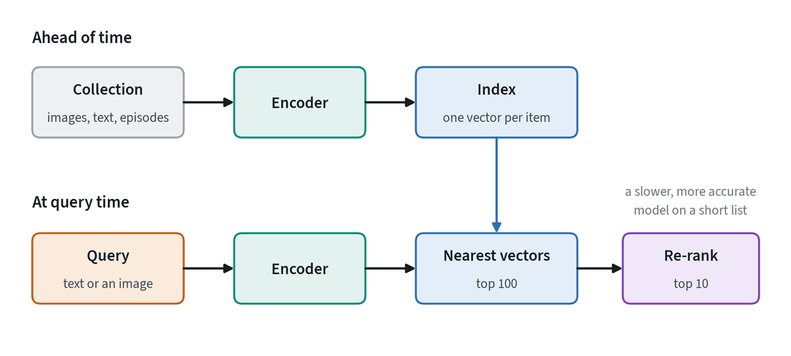
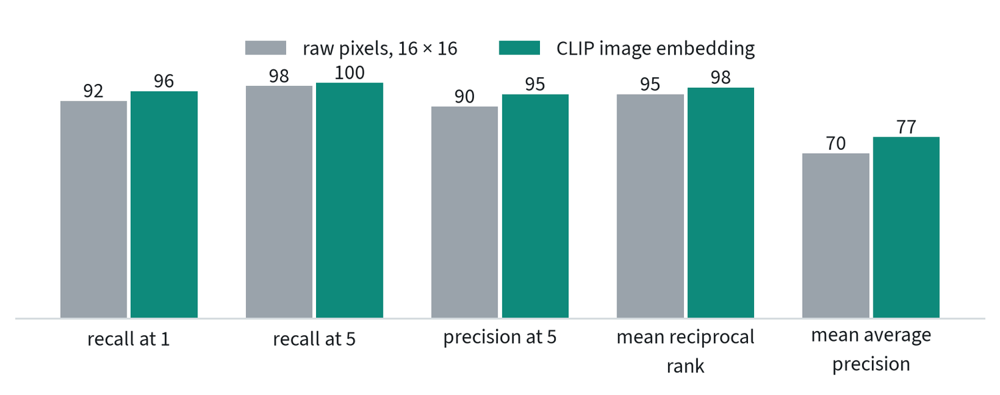
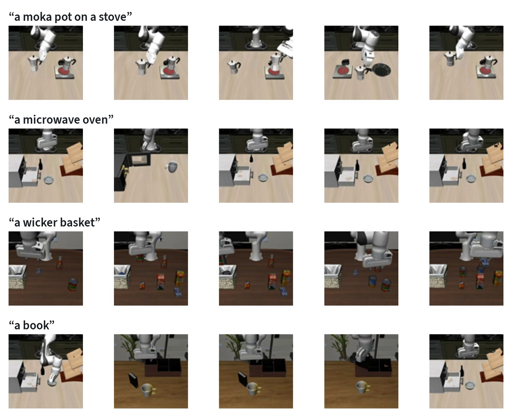
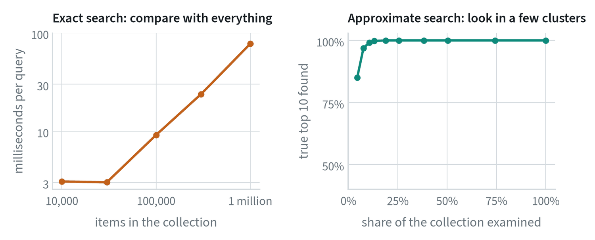

Finding instead of generating
Retrieval answers a question by finding the right item in a collection. A model that generates has to carry everything it knows in its weights. A model that retrieves can look things up, so its knowledge can be inspected, corrected and extended without retraining.


Modern retrieval is built on embeddings. An encoder turns each item into a vector such that similar items have similar vectors, and searching becomes finding the nearest vectors to the query. The note on contrastive learning covers how such encoders are trained.
A worked example on robot data
The collection here is 1,516 camera frames, four from each of the 379 LIBERO demonstrations, embedded with a public CLIP image encoder. A query is one frame. A retrieved frame counts as relevant if it comes from a different episode of the same task.



CLIP retrieves a frame of the right task first 96% of the time. The more instructive number is the baseline. Shrinking each frame to 256 grey pixels and comparing those directly scores 92%. These scenes differ so much in overall appearance that almost anything can tell the tasks apart, so a high score here says little about the encoder. Without the baseline the 96% would have looked like an achievement. The first note’s rule applies: know what the trivial method scores.
Scoring a ranking
| Metric | Question it answers | Use it when |
|---|---|---|
| Recall at k | Is at least one relevant item in the top k? | One good hit is enough, as in looking up an answer |
| Precision at k | What share of the top k is relevant? | The user reads the whole list |
| Mean reciprocal rank | How high is the first relevant item? Scores 1, ½, ⅓ … for ranks 1, 2, 3 | Only the first hit matters and its position counts |
| Mean average precision | Are all the relevant items near the top? | There are many relevant items and all should be found |
| nDCG | As above, with graded relevance and a discount for lower ranks | Some results are better than others |
The figure shows why the choice matters. Recall at 5 is 100% for CLIP while mean average precision is 77%. The first hit is nearly always right, and the full set of relevant frames is not all ranked at the top. Which number to report depends on what the retrieved items are for.
Multimodal retrieval
If two kinds of data share an embedding space, a query of one kind can retrieve items of the other. CLIP’s text encoder and image encoder were trained for this, so a sentence can search the same collection of frames.


The results are a fair picture of the technique. “A moka pot on a stove” and “a wicker basket” are found five times out of five. “A microwave oven” returns the microwave once and a white cabinet four times, which is a reasonable confusion for a boxy white appliance in a simulated scene. “A book” finds the book twice.
| Kind | Query | Returns | Example |
|---|---|---|---|
| Text to image | A description | Images or video | Find every episode that contains a drawer |
| Image to image | A picture | Similar pictures | Find past scenes like the one in front of the robot |
| Image to text | A picture | Captions or documents | Find the manual page for this part |
| Composed | A picture and a modification in words | Images | Like this scene, with the door open |
| Cross-sensor | A reading from one sensor | Data from another | Find the camera frames that match this touch pattern |
Searching large collections


Exact search compares the query with everything, so its cost grows in step with the collection: 9 ms at 100,000 items and 86 ms at a million here. Approximate nearest-neighbour search gives up a little accuracy to avoid that. In the right-hand panel, examining 8% of the collection found 97% of the true top ten.
- Clustering (inverted file). Group the vectors into clusters ahead of time and search only the few clusters nearest the query. This is the method in the figure.
- Graphs (HNSW). Link each vector to its neighbours and walk the graph toward the query. Very fast and accurate, at the cost of memory for the links.
- Compression (product quantisation). Store each vector as a short code so that far more fit in memory, with some loss of precision.
Below about 100,000 items exact search is usually fast enough and has nothing to tune. Reach for an index when it stops being so.
Beyond one vector
- Re-ranking. Retrieve a generous short list quickly, then score each candidate with a slower model that reads the query and the candidate together. It fixes many of the mistakes of single-vector matching at a cost that applies only to the short list.
- Late interaction. Keep a vector for every token or patch instead of one per item, and match them in detail at query time. It is more accurate on long, specific queries and stores many times more data.
- Hybrid search. Combine embedding search with keyword search. Embeddings find paraphrases and keywords find exact names and part numbers, and each covers the other’s blind spot.
Retrieval in robotics
- Finding training data. Given a few demonstrations of a new task, retrieve similar episodes from a large unlabelled collection and train on both.
- Checking coverage. Retrieve the nearest training episodes to a failure. If nothing is close, the policy was never shown that situation, as the failure triage note describes.
- De-duplication and curation. Near-identical episodes sit close together in embedding space and can be found and removed.
- Memory. Store what the robot has seen with where and when, and retrieve it to answer “where did I last see the keys?”.
- Giving a language model facts. Retrieve relevant documents and place them in the prompt, so answers rest on a source that can be checked.
- Recognising items. Match a camera view against a catalogue of known products or parts. My CaseID and maritime retrieval projects are both of this kind.
Common mistakes
- Reporting a score with no baseline. On an easy collection a trivial method scores highly too.
- Letting the query retrieve itself. Exclude the query, and near-copies such as frames of the same episode, from the results.
- Choosing one metric by habit. Recall at 1 and mean average precision can tell different stories about the same system.
- Building an index too early. Exact search is simpler and exact. Measure before replacing it.
Terms
- Retrieval
- Finding the items in a collection that best match a query.
- Index
- A stored structure that makes nearest-vector search fast.
- Recall at k
- The share of queries with at least one relevant item in the top k.
- Mean average precision
- A score that rewards ranking all relevant items near the top.
- Approximate nearest neighbour
- Search that examines part of a collection and accepts a small chance of missing a true neighbour.
- Re-ranking
- Re-ordering a retrieved short list with a slower, more accurate model.
Further reading
- Karpukhin et al., 2020. Dense Passage Retrieval for Open-Domain Question Answering.
- Khattab and Zaharia, 2020. ColBERT: Efficient and Effective Passage Search via Contextualized Late Interaction over BERT.
- Johnson et al., 2017. Billion-scale similarity search with GPUs (FAISS).
- Malkov and Yashunin, 2016. Efficient and robust approximate nearest neighbor search using Hierarchical Navigable Small World graphs.
- Lewis et al., 2020. Retrieval-Augmented Generation for Knowledge-Intensive NLP Tasks.
- Du et al., 2023. Behavior Retrieval: Few-Shot Imitation Learning by Querying Unlabeled Datasets.
- Radford et al., 2021. Learning Transferable Visual Models From Natural Language Supervision (CLIP).